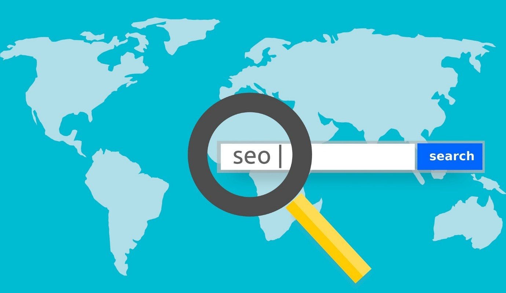

Une agence SEO à Toulouse pour booster votre CA
Cherchez-vous une augmentation exponentielle de trafic pour votre site Web, qui a
également comme conséquence des revenus incrémentaux ? Associez-vous à notre
agence en référencement basée à Toulouse et réputée dans le domaine qui assure un
référencement axé sur la performance.
Dans le monde numérique d'aujourd'hui, une forte présence sur Internet est
cruciale pour la croissance de toute entreprise en ligne. Cependant, si votre site
Web n'est pas bien classé dans les pages de résultats des moteurs de recherche
(SERP), c'est un indicateur de sa faible performance.
Pour optimiser votre site Web afin qu'il soit mieux classé, vous devez faire appel
à des consultants experts en référencement. Ils vous aideront à évaluer votre site
Web, ses points forts et ses points faibles. Ils proposent également des solutions
pour s'assurer que votre site est optimisé en fonction des paramètres de
référencement pertinents, augmentant ainsi le trafic organique et les revenus.
Notre agence est l'une des meilleures en référencement à Toulouse. Nous pouvons
vous aider à obtenir un classement supérieur dans les SERPs de Google.
Notre objectif est d'augmenter votre trafic organique, vos revenus et votre retour
sur investissement en classant les mots clés pertinents en première position.
Nos services de conseil en référencement professionnel comprennent un audit
technique de référencement ainsi que des services de récupération des pénalités de
Google qui peuvent améliorer considérablement la visibilité de votre site.
Pourquoi faire appel à une agence SEO ?

S'il peut être tentant d'essayer de se débrouiller tout seul, confier le
référencement à des professionnels vous fera gagner du temps, de l'argent et du
stress. Voici les raisons pour lesquelles vous devriez engager une agence de
référencement pour votre entreprise.
- Économies d'argent
Une stratégie de marketing numérique nécessite du temps et des ressources
précieuses que vous pouvez utiliser ailleurs dans votre entreprise. En
engageant une agence de référencement pour vous aider dans vos efforts de
marketing numérique, vous libérez du temps et des ressources pour d'autres
parties de votre entreprise.
L'embauche d'une équipe interne de référencement nécessite de l'argent pour les
salaires et les ressources. Lorsque vous engagez une agence de référencement,
vous ne payez que pour les services rendus. Vous engagez des professionnels
chargés de gérer les différents aspects de vos besoins en marketing numérique,
ce qui vous aidera à améliorer vos chances de réussite et à économiser de
l'argent.
- Expertise
Les agences de référencement possèdent l'expérience et les connaissances
nécessaires pour créer et mettre en œuvre une stratégie de marketing numérique
efficace. Une agence connaîtra les meilleurs types de stratégies qui répondront
aux besoins de votre entreprise. Elle sera en mesure d'examiner toutes les
variables de votre site web et de votre entreprise pour obtenir les meilleurs
résultats possibles, y compris votre budget et vos objectifs.
Les agences de référencement ont des années d'expérience de travail avec des
entreprises de toutes sortes de secteurs différents. Elles utilisent cette
expérience pour vous garantir des résultats durables.
- Meilleur retour sur investissement
L'optimisation des moteurs de recherche consiste à attirer votre marché cible
sur votre site web. Un aspect essentiel de toute stratégie de référencement
consiste à convertir ces visiteurs en clients fidèles. Une bonne agence de
référencement peut faire en sorte que votre site Web atteigne les personnes qui
recherchent les produits et services que vous proposez, ce qui vous permet
d'obtenir un excellent retour sur investissement.
- Obtenez un avantage concurrentiel
Les professionnels du référencement effectuent les recherches nécessaires pour
comprendre ce que fait votre concurrence. L'analyse de la concurrence peut
aider les professionnels à élaborer une stratégie pour aider votre entreprise à
battre vos concurrents, ce qui vous aidera à devenir une autorité dans les
domaines que vous connaissez le mieux !
- Gagner du temps
La gestion d'une entreprise demande beaucoup de temps et d'efforts. Développer
une excellente stratégie de référencement demande également beaucoup de temps
et d'efforts. Si vous n'avez pas le temps de vous concentrer sur le
référencement, votre entreprise en souffrira à long terme.
Lorsque vous avez une équipe de professionnels qui travaille pour vous, vous
n'avez pas à vous soucier de votre campagne de marketing numérique. Une agence
de référencement s'occupera de tout et effectuera les tâches nécessaires pour
que vous ayez une campagne de référencement réussie. En les laissant se charger
du gros du travail, vous libérez votre temps et pouvez-vous concentrer sur
d'autres aspects de votre activité.
La création d'un contenu frais et optimisé peut demander beaucoup de temps et
d'efforts. En confiant cette tâche à des professionnels, vous obtiendrez les
résultats escomptés tout en vous permettant de vous consacrer à d'autres tâches
importantes.
- Obtenez des résultats durables
En travaillant avec une agence de référencement, vous obtiendrez des résultats
qui dureront bien plus longtemps que d'autres stratégies marketing comparables.
Les professionnels du référencement feront tout ce qui est en leur pouvoir pour
évaluer votre site web et l'optimiser en conséquence afin qu'il soit
performant. Les agences de référencement s'assureront également que le trafic
qui arrive sur votre site se transforme en ventes.
Si vous cherchez à tirer le meilleur parti de l'optimisation des moteurs de
recherche, vous devez faire appel à une agence de référencement de premier
ordre.
Pourquoi vous devriez essayer un kit de broderie diamant
La broderie diamant vous intrigue mais vous n'êtes pas sûr que ce soit le métier
ou le passe-temps qui vous convienne ? Ne vous inquiétez pas ! Nous vous
présentons une liste des nombreux bénéfices de la broderie diamant pour la santé
mentale, émotionnelle et intellectuelle qui vous donneront raison d'essayer.
Nos services
- ● Audit SEO
Passez quelques minutes à la broderie diamant et tous vos soucis et votre
stress disparaîtront.Analyser votre site Web du point de vue des moteurs de
recherche afin de déterminer la marche à suivre pour optimiser le site Web et
générer du trafic organique.
- Rédaction SEO
Notre agence de référencement fournit les meilleures ressources pour créer un
contenu optimisé pour le référencement selon les exigences de l'approche du
marketing numérique.
- Netlinking
Générer des liens externes à partir de sites web qui pointent vers votre site
web afin de gagner en popularité, en positions, ainsi qu'en trafic.
- Optimisation SEO de votre site
En utilisant des outils de pointe, nous vous aiderons à améliorer votre
position dans la recherche organique et à augmenter le trafic sur votre site
web.
- Consulting SEO
Nos services de consulting en référencement se concentrent sur les conseils
techniques, la formation et la planification pour obtenir des résultats élevés.
- Accompagnement SEO
Nous offrons des services d'assistance et d'accompagnement SEO sur mesure,
adaptés à vos besoins spécifiques.
- SEO Local
Services de référencement local axés sur la conversion afin de garantir que
votre entreprise soit bien classée dans les requêtes de recherche locales et
que ses revenus augmentent.
- E-réputation
Votre marque devient ce que les gens disent d'elle en ligne. La gestion de la
réputation en ligne vise à exterminer les réactions, critiques et commentaires
négatifs en ligne sur votre entreprise et à promouvoir les commentaires
positifs.
- SEO international
Services de référencement pour aider la qualité de votre produit dans les
moteurs de recherche étrangers et les extensions.
- Référencement e-commerce
Grâce à nos services de référencement e-commerce et à notre équipe
expérimentée, votre site Web sera mieux classé dans les résultats de recherche
pour les mots clés utilisés par votre public cible.
- SEO pour Wordpress
Le référencement du CMS WordPress comprend la configuration des plugins,
l'optimisation des thèmes et le référencement de base.
- Reporting SEO
Nos services de rapports sur le référencement se concentrent sur la recherche
technique et le rapport des données possibles.
Notre approche et notre méthodologie SEO
Les campagnes de référencement sont très complexes et en constante évolution.
Notre méthodologie est conçue pour recueillir les informations appropriées auprès
de VOUS, notre client, sur votre entreprise, votre zone de couverture et toute
information pertinente sur votre concurrence, etc.
Que votre entreprise soit locale, régionale ou internationale, nous formulerons
une stratégie de contenu qui cible les visiteurs de votre site web et les
convertir en clients.
Notre agence suivra les étapes suivantes afin de vous fournir la campagne de
référencement la plus efficace possible.
-
Établir une base de référence sur le classement actuel de votre site web avec
un rapport initial sur le classement des mots-clés.
-
Effectuer une analyse du site web, de ce qui fonctionne et ne fonctionne pas
correctement.
-
Analyse de la concurrence (Comment vous situez-vous par rapport à vos
concurrents ?)
- Analyse des mots-clés
-
Intégration des comptes Google, tels que Google Analytics et Google Webmaster
Tools.
-
Munis des données précédentes, nous fournissons alors un plan détaillé de ce
qui est nécessaire pour atteindre nos/vos objectifs.
Pourquoi choisir notre agence SEO à Toulouse ?
- Visibilité accrue
Nos efforts constants amélioreront le classement de votre site et vous
apporteront plus de visibilité.
- Construire la crédibilité
Laissez-nous vous aider à construire l'autorité de votre marque et à gagner la
confiance de votre public.
- Améliorer l'expérience de l'utilisateur
Nous avons une équipe de développement web dédiée pour améliorer la structure
de votre site et améliorer l'UX.
- Succès à long terme
Nous visons un succès à long terme pour votre entreprise et nous nous efforçons
de maintenir un rang élevé à tout moment.
Les outils SEO

Vos diamants sont peut-être la partie la plus importante de votre kit, alors
faites attention à ne pas les perdre. La plupart des peintres de diamants
conservent les diamants supplémentaires qu'ils possèdent au cas où ils auraient
besoin de les utiliser sur une autre toile à l'avenir.
Consultez notre liste d'outils de référencement qui peuvent améliorer votre
classement organique et vous permettre de réaliser des gains immédiats dans votre
marketing dès aujourd'hui.
- Ahrefs Webmaster Tools
Réaliser un audit technique de votre site
- Answer the Public
Des centaines d'idées de mots-clés à partir d'un seul mot-clé.
- Moz Pro
Outils de marketing de recherche soutenus par la communauté.
- SEO Spider
SEO Spider est un outil d'exploration du Web efficace, mais la version gratuite
est légèrement limitée.
- Majestic SEO Tools
Une offrande royale pour tous les bricoleurs de liens retour (backlinks).
- Ubersuggest
Outil de suivi des mots-clés.
- SpyFu
Des outils de référencement à prix avantageux pour toutes les tailles
d'entreprise.
- Google Search Console
Quoi de mieux que le géant de la recherche Google pour améliorer votre
référencement ?
- Planificateur de mots-clés Google
Outil gratuit de sélection de mots-clés de Google.
Vos questions sur le SEO
-
C'est quoi le SEO ?
Le SEO est un acronyme pour "Search Engine Optimization" ou "optimisation des
moteurs de recherche" en français. Il s'agit de l'optimisation de vos pages Web
et de leur profil en ligne afin d'améliorer le classement de votre site dans
les pages de résultats des moteurs de recherche (SERPS) pour des groupes de
mots-clés désignés.
-
Qu'est-ce qu'un audit SEO ?
L'audit SEO est une évaluation de votre site web basée sur des facteurs
importants (on-page SEO, Off-page SEO, Technical SEO, etc.) Il analyse les
forces et les faiblesses de votre site web et l'évalue par rapport à vos
concurrents et fournit un plan pour attirer plus de trafic par le biais de
recherches organiques. En conclusion, vous recevez un rapport complet avec une
liste de recommandations/réparations qui vous aideront à augmenter ses
performances. En vous associant à une société de référencement réputée qui sait
comment réaliser un audit de référencement, vous éviterez non seulement des
erreurs coûteuses, mais vous pourrez également atteindre vos objectifs plus
rapidement.
-
C'est quoi le consulting SEO ?
Le consulting SEO consiste à ce qu'un consultant en référencement, sur la base
de vos buts et objectifs globaux, vous aide stratégiquement à construire une
présence en ligne pour votre entreprise grâce à divers outils fournis par
Google et d'autres sociétés qui vous aident à attirer des clients potentiels.
Un consultant en référencement a diverses tâches comme le marketing et
l'analyse du web, le marketing de contenu, l'analyse de la concurrence, la
stratégie des mots clés et l'audit du site web.
-
C'est quoi les backlinks ?
Un backlink est ce que l'on appelle les liens vers un site web à partir d'une
source externe.
-
Y a-t-il des mots-clés que vous ne pouvez pas classer ?
Nous ne pouvons pas vous classer pour des phrases déjà utilisées par un autre
client. Il serait injuste de classer deux clients pour la même phrase, car un
seul peut être le gagnant. De plus, il y aura des phrases si compétitives que
nous ne pourrons pas garantir un meilleur classement. Si tel est le cas, nous
vous en informerons.
-
Où est basée votre équipe ?
Notre agence de référencement SEO est basée à Toulouse. L'équipe a été recrutée
et formée par des experts en marketing Internet de renommée internationale et a
reçu une formation interne intense avant d'être affectée aux campagnes de nos
clients.
-
Pouvez-vous nous aider avec notre référencement ?
Oui. Nous fournissons des services de référencement à des clients du monde
entier, tout en étant actifs pour notre propre compte pour ce site et une série
d'autres sites Web internes, ce qui nous permet de rester au fait des
meilleures techniques et méthodologies de référencement. Si vous souhaitez
travailler avec nous, ou si vous avez besoin de conseils, n'hésitez pas à nous
contacter.
-
Pourquoi devrais-je choisir votre agence comme partenaire de référencement ?
Notre méthodologie, établie depuis de nombreuses années, ainsi que nos
antécédents et nos récompenses montrent que nous sommes un partenaire de
confiance dans ce domaine. Vous voulez la meilleure société de référencement
pour répondre à vos besoins, mais comment en choisir une ? L'expérience et
l'expertise sont importants, mais en fin de compte, il s'agira de choisir la
société de référencement avec laquelle vous vous sentez le plus à l'aise. Chez
NOUS, nos résultats sortent du lot.
-
Que fera votre agence exactement ?
Nous offrons un équilibre idéal entre les services de conseil et la mise en
œuvre des tâches qui se concentrent sur la maximisation de votre visibilité sur
Internet et le retour sur investissement. Nous documentons chaque
recommandation et expliquons en détail ce que nous ferons, sur et en dehors de
votre site web.
Prise de rendez-vous
Vous souhaitez créer votre site internet ou optimiser le référencement d'un site
existant ? Prenez un rendez-vous gratuitement avec un consultant de chez nous pour
vous assister.
Vous pouvez remplir ce formulaire de contact ci-dessous, en précisant la date et
l'heure à laquelle vous souhaitez prendre rendez-vous.
Vous pouvez aussi nous contacter par téléphone via le numéro suivant :
xx xx xxx
xxx